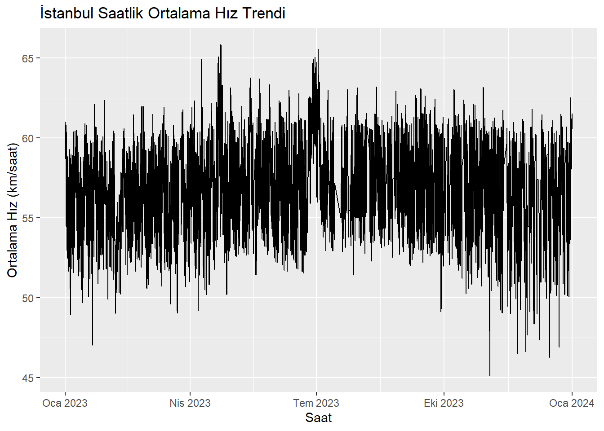

İstanbul Büyükşehir Belediyesi - Trafik Yoğunluğu Veri Analizi
Bu çalışmada kullanılan veriler Trafik Yoğunluğu (2023) websitesinden elde edilmiştir. Çalışmada 2023 yılı için Ocak - Aralık aylarındaki 12 aylık veri kullanılmıştır. Bu veriler R programı kullanılarak analiz edilmiştir.
Bu veri setinde, saatlik olarak İstanbul lokasyon yoğunluk ve trafik bilgisi bulunmaktadır.
2023 Ocak - 2023 Aralık Trafik Verisi
When you click the Render button a document will be generated that includes both content and the output of embedded code. You can embed code like this:
library(readr)
Warning: package 'readr' was built under R version 4.2.3
The echo: false option disables the printing of code (only output is displayed).
library(readr)library(dplyr)library(lubridate)# Convert DATE_TIME to datetime and ensure it's in the right formattotal_traffic_density$DATE_TIME <-ymd_hms(total_traffic_density$DATE_TIME)# Resample data to hourly frequency# Aggregating: mean for latitude, longitude, and speed metrics; sum for number of vehicleshourly_data <- total_traffic_density %>%mutate(HOUR =floor_date(DATE_TIME, "hour")) %>%group_by(HOUR) %>%summarise(LATITUDE =mean(LATITUDE, na.rm =TRUE),LONGITUDE =mean(LONGITUDE, na.rm =TRUE),GEOHASH =first(GEOHASH), # Assuming geohash doesn't change frequentlyMAXIMUM_SPEED =mean(MAXIMUM_SPEED, na.rm =TRUE),MINIMUM_SPEED =mean(MINIMUM_SPEED, na.rm =TRUE),AVERAGE_SPEED =mean(AVERAGE_SPEED, na.rm =TRUE),NUMBER_OF_VEHICLES =sum(NUMBER_OF_VEHICLES, na.rm =TRUE) )# View the first few rows of the resampled datahead(hourly_data)
Veri seti saatlik olarak birleştirerek ilgili saat içerisindeki en yüksek hızın (maximum_speed), ortalama hızın (average_speed) ve araç sayısının (vehicle_number) ortalaması alınarak bir pivot tablo haline getirilmiştir.
Kayıp Veri Yaratma
Rasgele kayıp veriler oluşturmak için bazı hücreleri NA (Not Available) olarak ayarlayacağız. Bu, genellikle veri setlerindeki eksik verilerin temsil edildiği şekildir. Rastgele bir yüzde seçeceğiz ve bu yüzdedeki verileri NA olarak işaretleyeceğiz
# Paketleri güncelleme#install.packages("rlang")#install.packages("tidyr")#install.packages("dplyr")#install.packages("ggplot2")#install.packages("lubridate")set.seed(123) # Setting a seed for reproducibility# Function to introduce missing values in a columnintroduce_missing_values <-function(data, column_name, missing_fraction =0.1) { sample_indices <-sample(1:nrow(data), size =nrow(data) * missing_fraction) data[sample_indices, column_name] <-NAreturn(data)}# Introduce missing valueshourly_data <-introduce_missing_values(hourly_data, "AVERAGE_SPEED")hourly_data <-introduce_missing_values(hourly_data, "NUMBER_OF_VEHICLES")hourly_data <-introduce_missing_values(hourly_data, "MAXIMUM_SPEED")# Checking the dataset after introducing missing valueshead(hourly_data)
Bu şekilde veride bazı NA (kayıp veriler) yaratılmıştır. R kodları, eksik değerleri bir veri kümesinin belirli bir sütununa eklemek için tasarlanmıştır. %10 ’u kayıp veri olacak şekilde mevcut veride kayıp veriler yaratılmıştır.
set.seed(123) # For reproducibility# Function to introduce missing valuesintroduce_missing_values <-function(data, column_name, missing_fraction =0.1) { sample_indices <-sample(1:nrow(data), size =nrow(data) * missing_fraction) data[sample_indices, column_name] <-NAreturn(data)}
İleriye Taşınan Son Gözlem (LOCF), zaman serisi veya panel verilerindeki eksik verileri doldurmak için kullanılan bir atama yöntemidir. Bu yöntemde eksik olan her değer, kendisinden önceki en güncel, eksik olmayan değerle değiştirilir. Bu yaklaşım çeşitli alanlarda, özellikle klinik araştırmalarda veya panel çalışmalarında yaygın olarak kullanılmaktadır ancak hem avantajları hem de dezavantajları vardır. Konsepti, kullanımlarını ve sonuçlarını inceleyelim:
LOCF Kavramı:
Uygulama: LOCF genellikle zaman serisi verilerinde veya gözlemlerin zaman içinde yapıldığı boylamsal verilerde uygulanır.
Yöntem: Belirli bir zaman noktasındaki bir değer eksikse, LOCF bunu mevcut en son gözlemle değiştirir. Örneğin, aylık bir zaman serisinde Mart ayı değeri eksikse, Şubat ayı değeriyle değiştirilecektir (Şubat ayı verilerinin mevcut olduğu varsayılarak).
Neden Kullanılır:
Verilerde Süreklilik: Verilerin sürekliliğini korumanın basit bir yolunu sağlayarak her zaman noktasının belirli analiz türleri için hayati önem taşıyan bir değere sahip olmasını sağlar.
Eksikliği Ele Alma: Eksik verilerin aralıklı olarak oluştuğu veri kümelerinde LOCF, eksik değerlerin bulunduğu satırları kaybetmeden tutarlı bir veri kümesi boyutunun korunmasına yardımcı olur.
# Visualization with ggplot2library(ggplot2)ggplot(hourly_data, aes(x = HOUR, y = AVERAGE_SPEED)) +geom_line() +labs(title ="İstanbul Saatlik Ortalama Hız Trendi",x ="Saat",y ="Ortalama Hız (km/saat)")

Grafik ayrıca kış aylarında (Aralık-Şubat) trafik hızlarının genellikle yaz aylarına (Haziran-Ağustos) göre daha yavaş olduğunu göstermektedir. Bunun nedeni muhtemelen yaz aylarında İstanbul’da daha fazla turist olması ve yaz aylarında havanın genel olarak daha iyi olması, insanları daha fazla araba kullanmaya teşvik ediyor.
Grafik genel olarak trafik sıkışıklığının İstanbul’da önemli bir sorun olduğunu gösteriyor. Şehrin trafik hızları dünya çapındaki büyük şehirlerin ortalamasının oldukça altındadır. Bunun nedeni şehrin kalabalık nüfusu, sınırlı toplu taşıma altyapısı ve dar sokakları gibi bir dizi faktördür. Hükümet, toplu taşımaya yatırım yapmak ve yeni yollar inşa etmek gibi trafik sorununu çözmeye yönelik adımlar atıyor. Ancak İstanbul’da trafik sıkışıklığının önümüzdeki yıllarda da sorun olmaya devam etmesi muhtemel.
# Show the first few rows of the filled datahead(hourly_data)